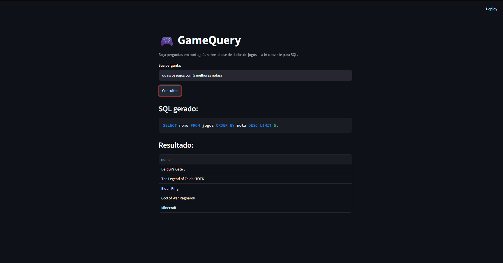
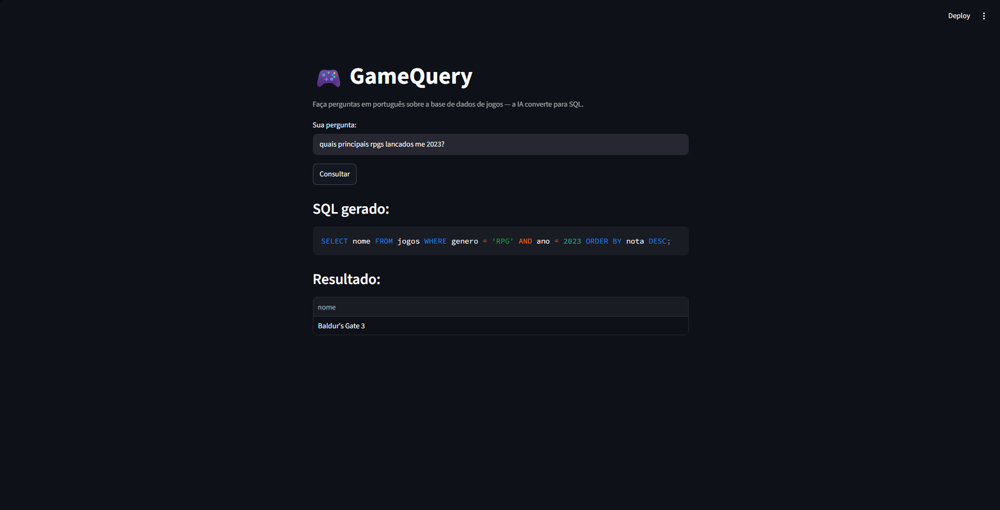
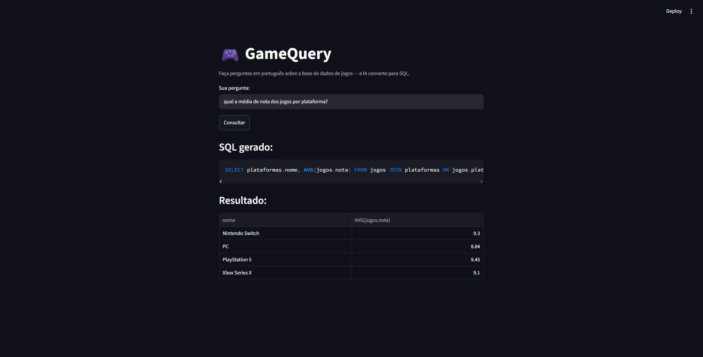
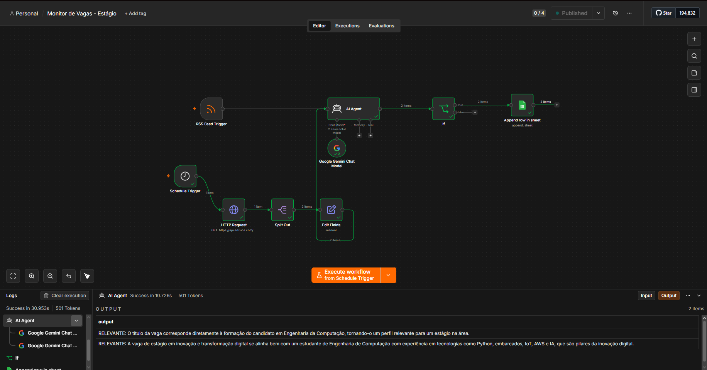
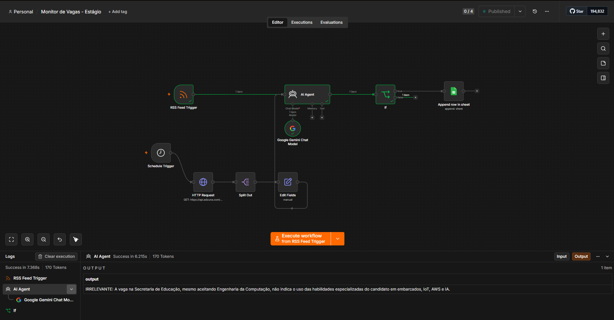

Transito entre hardware e software para construir soluções completas — de sensores
embarcados a agentes de inteligência artificial na nuvem. Curioso por natureza,
gosto de transformar ideias em sistemas que funcionam de ponta a ponta.
Um assistente treinado com o perfil do Lucas. Pergunte sobre projetos, skills ou formação.
Sobre mim
Da eletrônica ao código, e do código à nuvem
Tenho uma base sólida que une hardware e software, construída a partir da
experiência prática com sistemas embarcados e IoT — projetando, programando e integrando
dispositivos como ESP32 e Arduino a sensores e serviços em nuvem.
Do lado do software, atuo com Python, automações inteligentes e
Inteligência Artificial, aplicando desde agentes com tool calling até
visão computacional. Também tenho familiaridade com AWS para arquitetar
o backend por trás desses sistemas, conectando o mundo físico dos sensores ao mundo
digital dos dados.
6+Sensores integrados em projetos embarcados
AWSIntegração de nuvem para sistemas IoT
IAAgentes, automação e visão computacional
Projetos
O que venho construindo
🌱IoT · AWS
AgroVision AI
Sistema de monitoramento agrícola inteligente com 6 sensores distintos
coletando dados ambientais e do solo em tempo real, com integração à
AWS para armazenamento, processamento e visualização remota dos dados.
ESP32SensoresAWSPython
Ver estudo de caso→
🤖IA · Automação
Automação de Busca de Vagas com IA
Sistema de automação construído em n8n com agentes de IA que utilizam
tool calling para buscar, filtrar e organizar vagas de emprego,
integrando múltiplas APIs REST para coleta e processamento de dados.
n8nAgentes IAAPIs REST
Ver estudo de caso→
👁️Visão Computacional
Treinamento de IA para Validação de Imagens
Modelo de visão computacional treinado para validar e classificar
imagens automaticamente, aplicando técnicas de aprendizado de máquina
para garantir consistência e precisão na análise visual.
PythonVisão ComputacionalML
Ver estudo de caso→
🎨3D · Design
Modelagem e Texturização 3D
Criação de modelos 3D com modelagem detalhada e texturização realista,
utilizando Maya para a construção das geometrias e Substance Painter
para o desenvolvimento de materiais e texturas.
MayaSubstance Painter
🗣️IA · Text-to-SQL
GameQuery
Aplicação que converte perguntas em português para consultas SQL usando IA,
permitindo consultar um banco de dados em linguagem natural, sem escrever
uma linha de código SQL.
PythonStreamlitSQLiteGemini API
Ver estudo de caso→
IoT · AWS
AgroVision AI
Sistema de monitoramento agrícola inteligente construído com 6 sensores distintos,
ESP32/Arduino e integração completa com a AWS para coleta, transmissão e visualização
de dados ambientais e do solo em tempo real.
O Problema
O monitoramento agrícola e florestal tradicional costuma depender de rondas manuais
e leituras pontuais, o que é lento, caro e sujeito a falhas humanas — variações de
solo, umidade ou temperatura podem passar despercebidas até já causarem impacto na
produção. O AgroVision AI nasceu para substituir esse processo por coleta contínua
e automatizada.
Meu Papel
Atuei em um time de 3 pessoas responsável pelo projeto de ponta a ponta. Minha parte
se concentrou na camada de hardware e conectividade: implementei a leitura dos 6
sensores no ESP32/Arduino, a transmissão dos dados coletados para a AWS e a lógica
de segurança operacional por proximidade, que alerta quando algo se aproxima demais
da área monitorada.
Código representativo da lógica utilizada no projeto, ilustrando a leitura dos 6 sensores e o envio consolidado para a nuvem.
Arquitetura
📡Sensores
→
🔧ESP32 / Arduino
→
☁️AWS
→
📊Dashboard
Dificuldades Encontradas
Entre os principais desafios estiveram a calibração dos sensores para reduzir
variações entre unidades, a sincronização dos dados de diferentes sensores lidos
em intervalos distintos sem perder consistência temporal, e o tratamento de leituras
com ruído — especialmente do sensor ultrassônico, sensível a interferências e ecos
falsos — que exigiu filtragem e validação antes do envio para a nuvem.
Visão Computacional
Treinamento de IA para Validação de Imagens
Modelo de visão computacional treinado para automatizar a validação e classificação
de imagens em um processo de controle de qualidade, reduzindo a necessidade de
inspeção manual.
O Problema
Processos de controle de qualidade que dependem de inspeção visual manual são lentos
e inconsistentes — o julgamento humano varia entre inspetores e piora com a fadiga.
Era necessário um método automatizado e repetível para validar imagens em escala.
Processo de Treinamento
Preparação do dataset — coleta e rotulagem das imagens
Treinamento do modelo
Teste de acurácia
Validação de resultados
Lógica Construída
import tensorflow as tf
from tensorflow.keras.preprocessing.image import load_img, img_to_array
Código representativo da lógica utilizada no projeto
Dificuldades Encontradas
Os principais obstáculos foram o dataset desbalanceado, com muito mais exemplos de
um resultado do que de outro, o que exigiu técnicas de balanceamento e aumento de
dados; o overfitting do modelo nos treinos iniciais, corrigido com regularização e
mais dados de validação; e o ajuste fino de hiperparâmetros — taxa de aprendizado,
tamanho de batch — até atingir uma acurácia consistente.
IA · Text-to-SQL
GameQuery
Aplicação de text-to-SQL: o usuário faz uma pergunta em português e uma IA gera e
executa a consulta SQL correspondente em um banco de dados, retornando o resultado
sem que seja necessário escrever código.
O Problema
Consultar um banco de dados normalmente exige conhecimento de SQL, o que limita o
acesso à informação a quem sabe programar. A ideia do GameQuery foi permitir que
qualquer pessoa consulte dados fazendo perguntas em linguagem natural, sem precisar
entender a estrutura ou a sintaxe do banco.
Como Funciona
O usuário digita uma pergunta em português. Essa pergunta, junto com o schema do
banco de dados, é enviada para a IA (Google Gemini), que gera a consulta SQL
correspondente. Antes de qualquer execução, a consulta passa por uma validação de
segurança que garante que apenas comandos SELECT sejam permitidos. Só
então a consulta é executada em um banco SQLite, e tanto o SQL gerado quanto o
resultado são exibidos para o usuário. A stack utilizada foi Python, Streamlit,
SQLite e a API do Google Gemini.
Demonstração

Consulta simples: ordenação e limite (top 5 por nota).

Consulta com filtros combinados (gênero e ano), interpretando corretamente a intenção mesmo com erros de digitação.

Consulta avançada: JOIN entre tabelas com agregação (AVG) e agrupamento (GROUP BY).
Lógica Construída
import re
COMANDOS_PROIBIDOS = [
"INSERT", "UPDATE", "DELETE", "DROP",
"ALTER", "CREATE", "TRUNCATE", "ATTACH"
]
def validar_sql(query: str) -> bool:
query_normalizada = query.strip().upper()
if not query_normalizada.startswith("SELECT"):
return False
for comando in COMANDOS_PROIBIDOS:
if re.search(rf"\b{comando}\b", query_normalizada):
raise ValueError("Consulta bloqueada: apenas SELECT é permitido.")
cursor = conexao.cursor()
cursor.execute(query)
return cursor.fetchall()
Trecho representativo da camada de segurança do projeto
Dificuldades Encontradas
O maior desafio foi garantir, por segurança, que a IA gerasse apenas consultas de
leitura — nenhum comando que altere ou apague dados pode ser executado, daí a camada
de validação dedicada. Também foi necessário fornecer o schema completo do banco no
prompt para que a IA acertasse os nomes corretos de tabelas e colunas ao montar o
SQL, e lidar com os limites de cota da API de IA, que exigiram tratamento de erros e
controle de uso nas chamadas.
IA · Automação
Automação de Busca de Vagas com IA
Pipeline de automação construído em n8n com um agente de IA que utiliza tool calling
para buscar, classificar e organizar vagas de estágio, integrando múltiplas APIs REST
e fontes de dados diferentes.
O Problema
Acompanhar manualmente vagas de estágio publicadas em múltiplas plataformas e fontes
é repetitivo e consome tempo que poderia ser usado nas candidaturas em si. Era
necessário automatizar a coleta e, principalmente, a triagem de relevância dessas
vagas.
Arquitetura Completa

Fluxo 1: Schedule Trigger + API Adzuna — o agente busca vagas reais periodicamente
e classifica como relevantes as que combinam com o perfil.

Fluxo 2: RSS Feed Trigger (Google Alerts) — a IA analisa uma vaga real captada
pelo feed e a classifica como irrelevante, justificando a decisão.
Como Funciona
O pipeline combina múltiplos triggers — um Schedule Trigger que consulta
periodicamente a API da Adzuna e um RSS Feed Trigger que monitora alertas do Google —
para captar vagas de fontes diferentes. Cada vaga coletada passa por um agente de IA
que analisa o conteúdo e classifica a relevância com base no meu perfil e nos
critérios definidos. Um filtro condicional decide se a vaga segue no fluxo, e as
vagas aprovadas são registradas automaticamente em uma planilha, prontas para
candidatura.
Dificuldades Encontradas
A configuração do OAuth2 no Google Cloud para autenticar o acesso às planilhas e
aos alertas foi um dos pontos mais trabalhosos, exigindo atenção aos escopos de
permissão. Também foi necessário padronizar os dados vindos de fontes diferentes —
a API estruturada da Adzuna e o feed RSS não estruturado — em um formato único antes
da classificação. Por fim, ajustar o prompt do agente de IA para evitar falsos
positivos, vagas classificadas como relevantes sem realmente serem, exigiu iteração
e testes com casos reais.
Skills
Ferramentas e tecnologias
Linguagens
Python
Java
JavaScript
C/C++
SQL
Embarcados & IoT
Arduino
ESP32
Sensores
AWS
IA & Automação
n8n
Agentes de IA
Visão Computacional
Ferramentas
Git / GitHub
Oracle SQL
Cisco Packet Tracer
Sobre o Site
Tecnologias por trás deste portfólio
Front-end
HTML5, CSS3 e JavaScript puro, sem frameworks. Transições customizadas no
estilo das interfaces da Sony/PS5, com easing cubic-bezier e a Intersection
Observer API para os efeitos ao rolar a página.
HTML5CSS3JavaScriptIntersection Observer
Back-end
Função serverless em Node.js hospedada na Vercel, exposta no endpoint
/api/chat e consumida pelo front-end da seção "Pergunte".
Node.jsVercel Functions/api/chat
IA
Google Gemini via API REST alimenta o assistente "Pergunte sobre o Lucas",
com um system prompt contendo o perfil e os projetos dele.
Google Geminigemini-2.5-flashAPI REST
Hospedagem & Deploy
Deploy contínuo na Vercel a cada push na branch main via GitHub,
com variáveis de ambiente seguras para a chave de API.
VercelDeploy contínuoVariáveis de ambiente
Controle de Versão
Todo o histórico e a evolução do projeto são versionados com Git e
hospedados no GitHub.
GitGitHub
Desenvolvimento Assistido
Parte da construção deste site contou com o apoio do Claude Code, da
Anthropic, para acelerar a implementação do front-end e das integrações.
Claude Code
Contato
Vamos conversar
Estou aberto a novas oportunidades, colaborações e conversas sobre tecnologia.
Fique à vontade para entrar em contato.